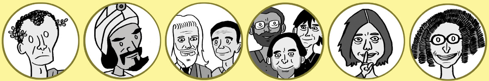

Sommaire
Présentation de DiffieHellmann
Famille d'appartenance
DiffieHellmann font partir de la famille de la Sécurité & Confidentialité en introduisant l'échange de clés, un élément fondamental des protocoles cryptographiques sécurisés.
Biographie
Whitfield Diffie
Whitfield Diffie est né le 5 juin 1944 à Washington, D.C., dans une famille juive. Il a obtenu son diplôme de mathématiques à l’Institut de technologie de Massachusetts (MIT) en 1965, puis son doctorat en mathématiques à la même institution en 1969. Il a travaillé comme programmeur informatique, chercheur et professeur à différents endroits, notamment chez Sun Microsystems, ICANN et Zhejiang University. Il est actuellement professeur associé au Freeman Spogli Institute for International Studies à Stanford University et consulteur scientifique au CISAC (Centre international pour la sécurité des systèmes d’information). Il a reçu plusieurs prix et distinctions pour ses contributions à la cryptographie, dont le prix Turing en 2015 avec Martin Hellman
Martin Hellman
Martin Hellman est né le 2 octobre 1945 à New York City, dans une famille juive. Il a obtenu son diplôme d’électrotechnique à l’Université de New York en 1966, puis son master et son doctorat en électronique à l’université Stanford en 1967 et 1969. Il a travaillé comme chercheur chez IBM Research Center Thomas J. Watson de 1968 à 1969, puis comme assistant professeur d’électrotechnique au MIT de 1969 à 1971. Il est revenu à Stanford University en tant que professeur d’électrotechnique en 1971 et y a enseigné jusqu’à sa retraite en tant que professeur émérite en 1996. Il est actuellement membre du conseil d’administration de Daisy Alliance, une organisation non gouvernementale basée à Atlanta qui vise la sécurité mondiale par le désarmement nucléaire et la non-prolifération34. Il a reçu également plusieurs prix et distinctions pour ses contributions à la cryptographie, dont le prix Turing avec Whitfield Diffie.
Travaux majeurs
- Diffie et Hellman ont révolutionné la cryptographie avec leur article de 1976, introduisant l'échange de clés Diffie-Hellman-Merkle, permettant une distribution sécurisée sans intermédiaire.
- Diffie et Hellman ont étendu leur contribution en développant des applications pratiques du chiffrement asymétrique, notamment les signatures numériques, les certificats numériques, et la sécurisation des transactions en ligne et des réseaux sociaux.
Hommages
- Le prix Kanellakis avec Leonard Adleman (1996) pour leur invention du chiffrement asymétrique
- Le prix Marconi avec Leonard Adleman (2000) pour leur contribution au développement du chiffrement asymétrique
- Le prix Turing avec Leonard Adleman (2015) pour leur invention du chiffrement asymétrique
- La médaille Hamming avec Leonard Adleman (2010) pour leur contribution au domaine des théories informatiques
- L’inclusion dans le National Inventors Hall of Fame (2011).
- L’inclusion dans le National